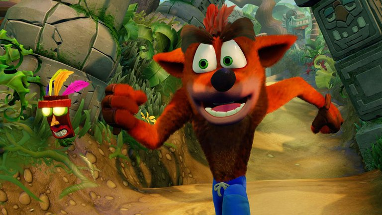

:quality(85)/cloudfront-us-east-1.images.arcpublishing.com/infobae/UJLINLDMPZG6NG33KOLEUF2S5U.jpg)
“El marsupial loco favorito de todos cumple 25 años, y todos están invitados a la fiesta. Diviértete durante el Día Wumpa a partir de hoy, 9 de septiembre, para celebrar un cuarto de siglo de Crash”, es el mensaje con el que ActiVision, una de las productoras de videojuegos más famosas del mundo, invitó a los seguidores de Crash Bandicoot a celebrar el aniversario número 25 de este, uno de los títulos más recordados de la Play Station 1, y de los más importantes en la historia de los juegos de video.
Mira la nota local 